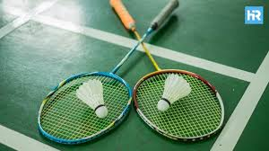
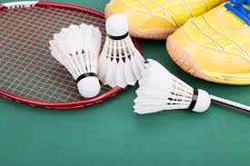
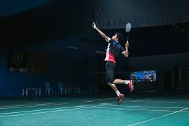
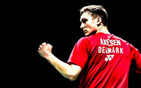

Badminton is a high-speed racquet sport played by millions of people worldwide, both casually and professionally. It involves hitting a shuttlecock a lightweight projectile made of feathers or synthetic materials over a net using a racquet. Unlike most sports, badminton can be played indoors or outdoors, but professional matches are always held indoors to avoid interference from the wind. The game is known for its speed, strategy, and precision, and it holds the record for the fastest racquet sport in the world. Badminton became an Olympic sport in 1992 and is now a major international game with tournaments watched by millions globally and it is also a game loved by lots of people

Badminton is played either as singles (1 vs 1) or doubles (2 vs 2), including mixed doubles with one male and one female on each team. The court is divided by a net, and players must hit the shuttlecock over the net to land it within the boundaries of their opponent’s side. Matches are played as the best of three games, with each game played to 21 points. Players score a point on every rally, whether they serve or receive. To win a game, a player must lead by at least two points. If the score reaches 29–29, the next point decides the winner of that game. Quick movement, smart shot selection, and tactical positioning are key to winning.

There are several important techniques in badminton that help players dominate their opponents. The smash is one of the most powerful shots, where the shuttlecock is hit sharply downward at high speed sometimes over 490 km/h! The drop shot is a soft, controlled shot that barely makes it over the net and forces the opponent to move forward quickly. The clear sends the shuttle high and deep to the back of the opponent’s court, and the drive is a fast, flat shot used to apply pressure. Mastering footwork is also essential, as players need to cover the entire court quickly and efficiently. Top-level badminton requires lightning-fast reflexes, good anticipation, and a strong mental game to outsmart the opponent.
Lin Dan of China, often called "Super Dan," is a two-time Olympic gold medalist and five-time World Champion known for his powerful smashes and smart gameplay.
Lee Chong Wei from Malaysia was world number one for 349 weeks and is admired for his consistency and sportsmanship.

Viktor Axelsen of Denmark, the 2020 Olympic gold medalist, is known for his height, agility, and precise control. These players became legends through intense training, strong mental focus, and the ability to perform under pressure in international competitions.